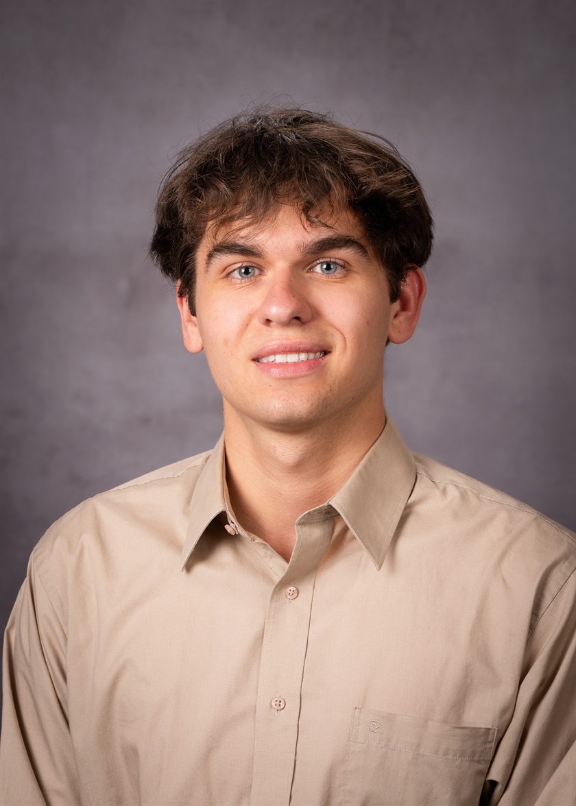
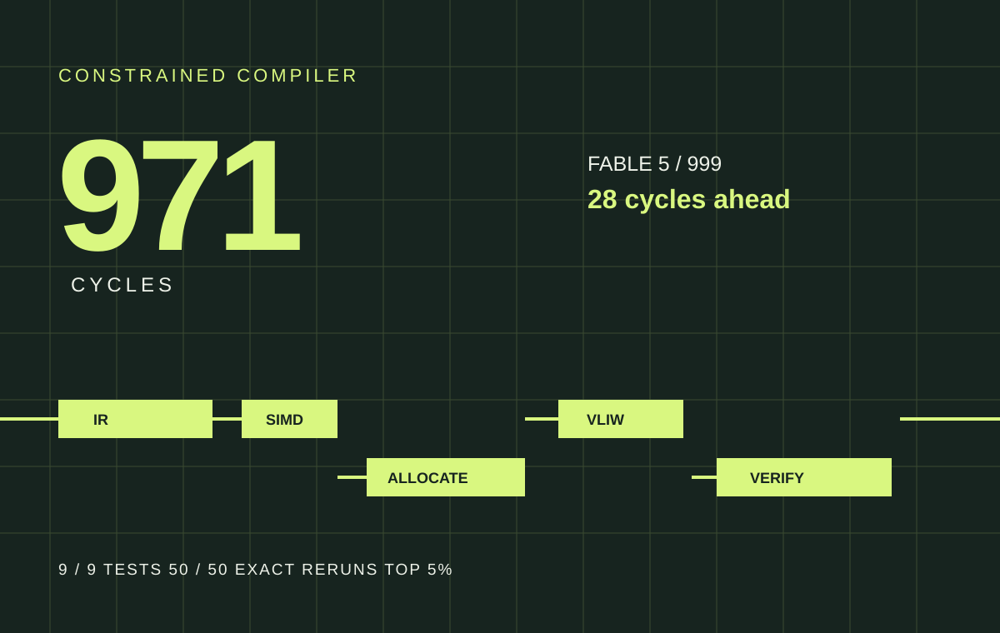
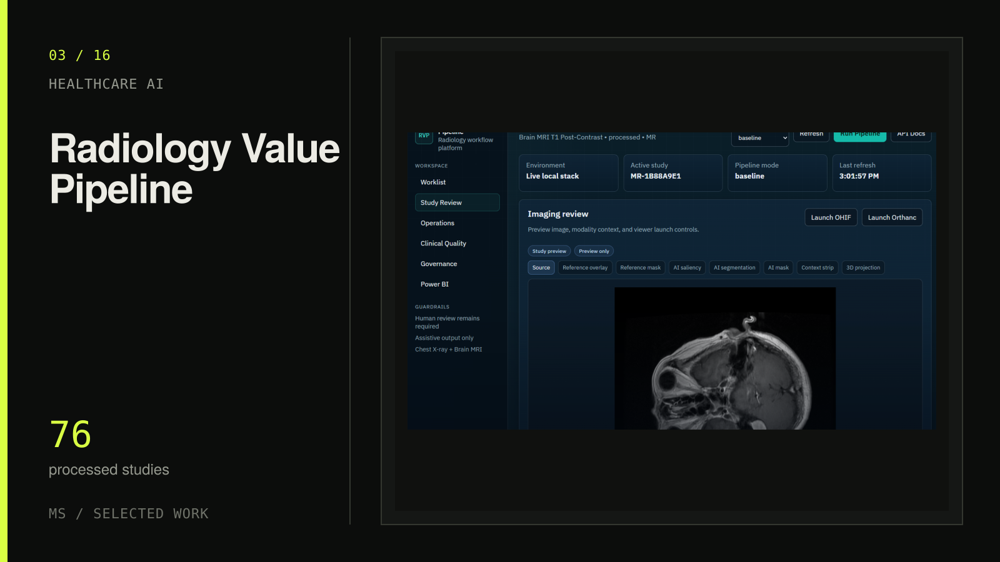
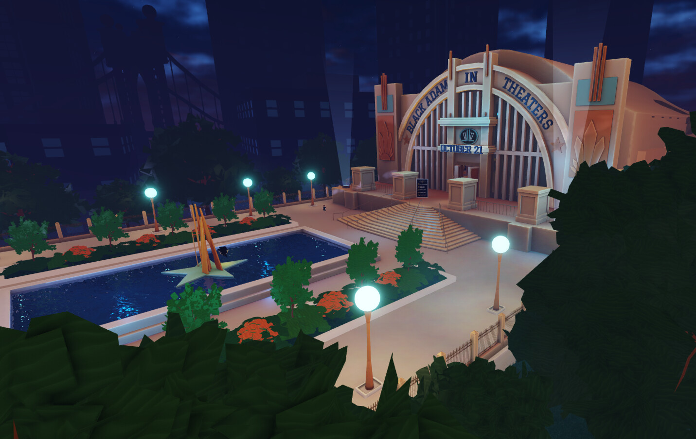

ravel*
AI, inside your analysis.RStudio / CRAN
Ravel
A CRAN-published RStudio copilot used by 2,000+ people that understands the active analysis and keeps every proposed code or file action visible and reviewable.
I build AI tools, statistical software, and analytics systems. Currently at Volvo; publishing open-source tools used by thousands.

Markuss SauleBusiness AnalyticsPython, R, SQL & Power BI.
Statistics, software, and product analytics.
A CRAN-published RStudio copilot used by 2,000+ people that understands the active analysis and keeps every proposed code or file action visible and reviewable.

Compiler & ML SystemsA dependency-aware VLIW/SIMD compiler that drove a frozen machine-learning kernel to 971 cycles, placing #25 worldwide and finishing 28 cycles ahead of the public Claude Code Fable 5 baseline.

Healthcare AIA radiology workflow platform that connects imaging models to human review, audit trails, governance, and Power BI reporting, with its MRI evidence clearly bounded.
An R package that actively tries to break a statistical result, then shows the smallest plausible change that makes the claim fragile.

Ten years of world design, player flow, and live experiences. Warner Music, DC, Bakugan, L'Oreal, and Sony. Personally commended by Roblox CEO David Baszucki.
Step insideAdvanced Acceptance selections
Ten Advanced Acceptance selections exploring difficult questions in bioethics, consent, and human judgment.
Open-source engineering
Correctness, testing, and developer experience in the tools that other people build on.
scikit-learnTransformerLensMONAI LabelPosit Air